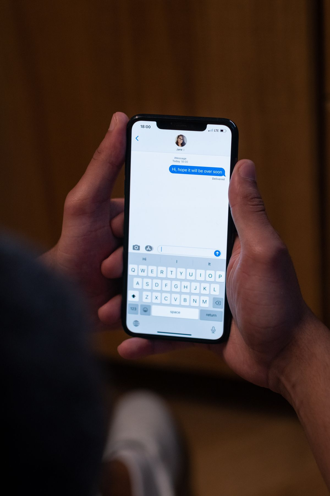

Cara jadwalkan pesan WhatsApp akhirnya sedang diuji secara resmi. Selama ini kamu harus menunggu jam yang tepat, memasang pengingat sendiri, atau memakai aplikasi tambahan hanya untuk mengirim satu pesan pada waktu tertentu. Dalam pengujian terbaru, kamu cukup menulis pesan sekarang, memilih tanggal dan jam pengirimannya, lalu pesan itu terkirim sendiri pada waktunya, bahkan saat HP kamu sedang offline.
Catatan penting sebelum kamu mencarinya di HP: per Oktober 2026 fitur ini belum tersedia untuk semua orang. Menurut laporan WABetaInfo yang dikutip banyak media teknologi sejak 12 Oktober 2026, fitur ini baru muncul untuk sebagian penguji WhatsApp beta di Android, tepatnya versi 2.26.40.7. Belum ada tanggal rilis resmi untuk publik, dan belum ada laporan fitur ini muncul di iPhone. Jadi kalau tombolnya belum ada di WhatsApp kamu, itu normal, bukan karena HP kamu bermasalah.
Cara jadwalkan pesan WhatsApp bila fiturnya sudah muncul
Bagi penguji yang sudah kebagian, langkahnya sederhana dan tidak memakai menu yang tersembunyi jauh:
- Buka chat pribadi atau grup, lalu tulis pesanmu seperti biasa. Kamu juga bisa menyiapkan tautan, foto, atau video.
- Tekan dan tahan tombol kirim, jangan diketuk seperti biasa. Dari situ akan muncul pilihan penjadwalan.
- Pilih tanggal dan jam pengiriman yang kamu mau, lalu konfirmasi. Pesanmu tidak langsung terkirim, melainkan menunggu sampai waktu yang kamu pilih.
- Untuk memeriksa atau membatalkannya, buka info chat tersebut. Pesan yang terjadwal tampil di bagian khusus, dan dari situ kamu bisa melihat atau menghapusnya sebelum waktu pengiriman tiba.
Kalau kamu menghapus pesan terjadwal sebelum waktunya, penerima tidak diberi tahu apa pun. Penerima juga tidak mendapat tanda bahwa sebuah pesan sebenarnya sudah kamu siapkan jauh hari sebelumnya. Di layar penerima, pesan itu datang seperti pesan biasa.

Batasan yang perlu kamu tahu sebelum berharap terlalu jauh
Karena masih tahap uji, fitur ini punya beberapa batas yang jelas. Waktu pengiriman paling cepat adalah 10 menit dari sekarang, dan paling lama dua minggu ke depan. Jadi fitur ini cocok untuk ucapan dan pengingat dalam hitungan hari, bukan untuk menyiapkan pesan berbulan-bulan sebelumnya.
Untuk foto dan video, satu pesan terjadwal hanya bisa membawa satu berkas media. Kalau kamu ingin mengirim banyak foto sekaligus pada jam tertentu, untuk saat ini kamu perlu menjadwalkannya satu per satu atau mengirimnya dengan cara biasa. Pesan terjadwal tetap dilindungi enkripsi end-to-end seperti chat WhatsApp pada umumnya, dan menurut laporan pengujian, pesan tetap terkirim pada jadwalnya walau aplikasi ditutup atau HP pengirim sedang tidak terhubung ke internet.
Aturan khusus untuk chat grup
Fitur ini bisa dipakai di grup, tapi ada satu aturan yang gampang terlewat. Pesan terjadwal hanya akan diterima oleh anggota yang sudah menjadi anggota grup pada saat kamu menjadwalkannya. Orang yang baru masuk grup sesudah itu tidak akan menerima pesan tersebut.
Aturan ini masuk akal untuk pengumuman yang konteksnya hanya dipahami anggota lama. Tapi kamu juga perlu hati-hati: kalau tujuanmu adalah memberi tahu semua anggota termasuk yang baru bergabung minggu depan, pesan terjadwal bukan alat yang tepat. Kirim ulang secara manual sesudah anggota baru masuk, atau pakai pengumuman biasa di waktu yang bisa dibaca semua orang.
Contoh pemakaian yang paling masuk akal
Pemakaian paling jelas adalah ucapan ulang tahun tepat tengah malam. Kamu bisa menulisnya sore hari saat masih ingat, menjadwalkannya ke jam 00.00, lalu tidur tanpa takut ketiduran dan lupa. Contoh lain adalah pesan kerja yang baru pantas terkirim pada jam kantor: kamu menulisnya malam hari saat idenya muncul, lalu menjadwalkannya ke Senin pagi supaya tidak mengganggu waktu istirahat orang lain.
Fitur ini juga membantu saat kamu berkomunikasi dengan orang di zona waktu berbeda. Daripada menghitung selisih jam sambil menahan diri untuk tidak mengirim sekarang, kamu tinggal memilih waktu yang sopan di tempat penerima. Untuk penjual online, pola yang sama bisa dipakai untuk menyiapkan pesan tindak lanjut ke pembeli pada jam yang sudah disepakati, tanpa harus membuka chat lagi pada jam tersebut.
Kalau fiturnya belum muncul di HP kamu
Sabar dulu dan jangan memasang aplikasi WhatsApp modifikasi dari sumber tidak resmi hanya demi fitur ini. Aplikasi semacam itu berisiko untuk keamanan akun dan data chat kamu, padahal fitur resminya sedang dalam perjalanan. Jalur yang aman hanya dua: tunggu rilis publiknya, atau ikut program beta resmi WhatsApp di Play Store bila slot pengujinya sedang terbuka untukmu.
Sambil menunggu, cara lama tetap bisa dipakai untuk kebutuhan mendesak. Kamu bisa menyiapkan teks pesan di catatan HP dan memasang alarm sebagai pengingat untuk mengirimnya. Memang tidak otomatis, tapi jauh lebih aman daripada memasang aplikasi dari sumber yang tidak jelas.
Intinya
Cara jadwalkan pesan WhatsApp yang sedang diuji ini bertumpu pada satu gerakan: tekan tahan tombol kirim, lalu pilih waktu antara 10 menit sampai dua minggu ke depan. Pesannya bisa berupa teks, tautan, foto, atau video, bisa untuk chat pribadi maupun grup, dan tetap terkirim walau HP kamu offline. Karena statusnya per Oktober 2026 masih uji terbatas di beta Android, sebagian besar pengguna belum bisa mencobanya hari ini. Tapi arahnya sudah jelas: fitur yang lama diminta ini akhirnya dikerjakan juga, dan kamu tinggal menunggu giliran akunmu kebagian.
← Kembali ke Other